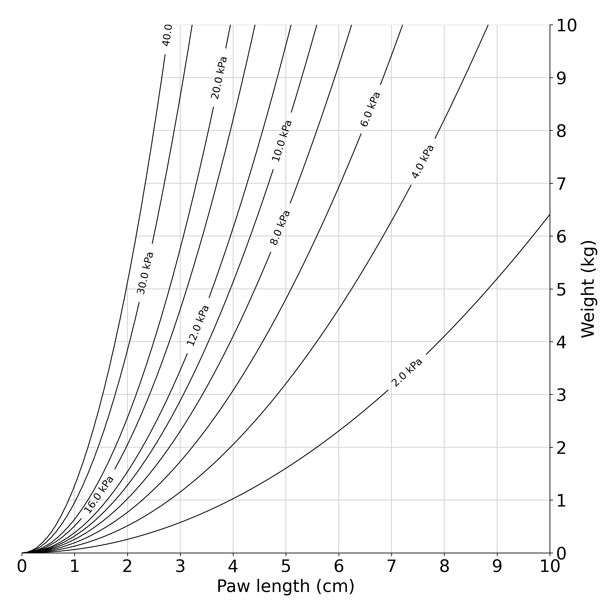

Cat math
Paw pressure
My cats like to stand on me when they want food. The smallest of these cats feels heavier than the biggest cat. Big cat weighs 6.4 kg and has a paw length of 5.1 cm. Small cat weighs 5.4 and has a paw length of 3.8 cm. I wanted to know if the paw size or the weight contributed more to the pressure I feel on my chest.
Suppose we model a cat as a weight on four cylinders. Then, the force exerted by the cat is proportional to gravity, and this is distributed evenly over an area of \(4*\pi*r^2\) where \(r\) is half the cat's paw length. We can create a psychrometric-style chart for cat weight vs. paw length.

Code for the cat weight vs. paw length plot
import numpy as np
import matplotlib.pyplot as plt
m = np.arange(0, 10.1, 0.1) # weight (kg)
l = np.arange(0, 10.1, 0.1) # paw length (cm)
g = 9.8 # acceleration (m/s^2)
f = m*g # force (N) (kg*m/s^2)
fpera = ((f[None,:]/(4*np.pi*(l[:,None]/200)**2+1e-12)))/1000 # pressure per paw (kPa)
def fa_m(p, l):
return p*1000*(4*np.pi*(l/200)**2+1e-12)/g
def fa_l(p, m):
return np.sqrt((m*g/(p*1000)+1e-12)/(4*np.pi))*200
plt.rcParams.update({'font.size': 20})
def fmt(x):
s = f"{x:.1f} kPa"
return s
fig, ax = plt.subplots(1,1,figsize=(10,10))
# construct a grid
for i in np.arange(0,10.1,1.0):
ax.axhline(i, xmin=fa_l(40,i)/10.1, xmax=10, c='lightgray', linewidth=1)
ax.axvline(i, ymin=0, ymax=fa_m(40,i)/10.1, c='lightgray', linewidth=1)
CS = ax.contour(l, m, fpera.T, levels=[2,4,6,8,10,12,16,20,30,40], colors="black", linewidths=1)
ax.clabel(CS, CS.levels, inline=True, fmt=fmt, fontsize=12)
ax.yaxis.set_label_position("right")
ax.yaxis.tick_right()
ax.set_xlabel('Paw length (cm)')
ax.set_ylabel('Weight (kg)')
ax.set_xlim([0,10])
ax.set_ylim([0,10])
ax.set_xticks(range(11))
ax.set_yticks(range(11))
ax.spines['left'].set_visible(False)
ax.spines['top'].set_visible(False)
ax.set_aspect('equal')
fig.tight_layout()
fig.savefig('cat_paw_pressure_labeled.png', dpi=300, facecolor="white", transparent=False)
Indeed, the small cat exerts greater pressure per paw than the big cat, but only slightly. For the pressure difference we feel, it seems that perhaps small cat is leaning into his front paws.